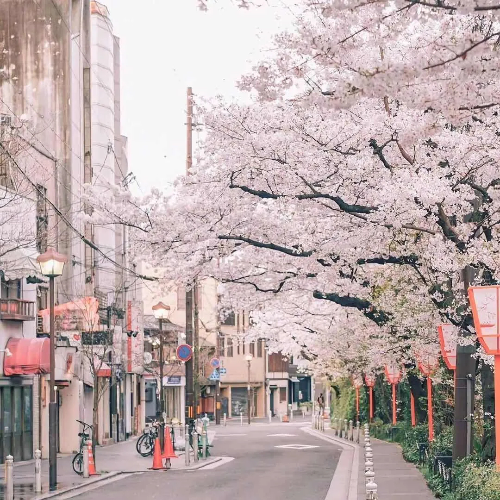

About myself!!!
有人说，不同的年龄会遇见不同的你人生所走的路每步都算数。
其实我们每天都在提升自己改变自己人生没有一蹴而就的，没有谁一生下来就注定是赢家，漫长的岁月中，我们需要沉得住气，足够有耐心并不断提升自己的技能
想要伯乐赏识你，首先你得是千里马，因为没有行动力所以才没有好习惯从而把生话过得一地鸡毛，想要改变自己提升自己，就先从行动力开始，对自己严格要求，让自己自律起来拓宽自己的格局，改变自己的思维，增强自己的行动力
你终究会变得越来越好愿你历遍山河仍觉人间值得，历经沧桑而无伤
关于你，我总是有很多话想说，可是又怕这些话不能完全表达出我的真心。你只需要知道，倘若你感知到了七分，那我必然有八分真意。关于你，我脑海里自然浮现出来的便是“幸运”和“信任”。
是你让我知道，哪怕我再渺小，我们在对方心中都是唯一的。跟你在一起，总能驱散我的焦虑，我只想珍惜当下的时光，收获了一份安心，这是怎样的幸运啊。至于信任，我可以毫不夸张得说，我从未如此信任过一个非亲缘关系的人。
哪怕之前吵架的时候，我很难受。也没有丝毫动摇我只想和你在一起的心。
近来又读懂了“青青子衿，悠悠我心，纵我不往，子宁不嗣音？”我若不去寻你，你大可以来找我嘛。婉约是我的基调，却带来了很多不必要的误会和错过。我看犬夜叉的时候，非常心疼戈薇就是这样的，她太勇敢了，她性格太好了，简直就是天使嘛。
可是事实上很多人，都是桔梗和犬夜叉，会因为自我保护而误会对方，哪怕深爱对方。
所以，哪怕结局并不美好，我也不希望最后我会怪自己。玫瑰在小王子离开的时候才意识到没有让对方感觉到自己爱他。而小王子在成长后，才明白玫瑰花是他的唯一。而我不愿我们会是这样的结局。
